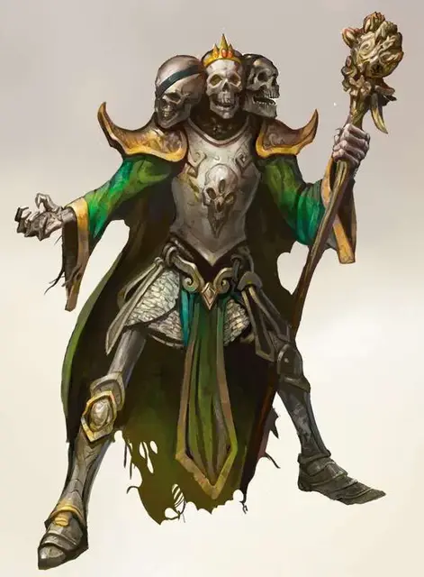

Лорд черепов
Skull Lord
Средняя Нежить (Чародей), обычно законно-злая

Класс Доспеха 18 (латы)
Хиты 112 (15к8 + 45)
Скорость 30 футов
| мод | спас | ||
|---|---|---|---|
| СИЛ | 14 | +2 | +2 |
| ЛОВ | 16 | +3 | +3 |
| ТЕЛ | 17 | +3 | +3 |
| мод | спас | ||
|---|---|---|---|
| ИНТ | 16 | +3 | +3 |
| МДР | 15 | +2 | +2 |
| ХАР | 21 | +5 | +5 |
Навыки Атлетика +7, Восприятие +12, История +8, Скрытность +8
Сопротивление урону некротическая энергия, холод; дробящий, колющий, рубящий от немагических атак
Иммунитет к урону яд
Иммунитет к состояниям ослепление, отравление, очарование, глухота, испуг, ошеломление, истощение, бессознательность
Чувства тёмное зрение 60 футов, пассивное Восприятие 22
Языки все, известные при жизни
Опасность 15 (13000 опыта)
Бонус мастерства +5
Среда обитания Болото, Подземье, Пустыня
Особенности
Легендарное сопротивление (3/день). Если лорд черепов проваливает спасбросок, он может вместо этого сделать спасбросок успешным.
Хозяин надгробья. Вся союзная нежить лорда черепов пределах 30 футов от него совершает спасброски с преимуществом и восстанавливает 1к6 хитов каждый раз, когда начинает свой ход в этой области.
Увёртливость. Если лорд черепов подвергается действию эффекта, позволяющего совершить спасбросок Ловкости, чтобы получить только половину урона, лорд черепов вместо этого не получает урон, если преуспеет в спасброске, и получит лишь половину урона, если провалит спасбросок, при условии что он дееспособен.
Необычная природа. Лорд черепов не нуждается в воздухе, пище, питье или сне.
Действия
Мультиатака. Лорд черепов совершает три атаки Костяным посохом или Лучом смерти.
Костяной посох. Рукопашная атака оружием: +8 к попаданию, досягаемость 5 футов, одна цель. Попадание: 7 (1к8+3) дробящего урона плюс 21 (6к6) урона некротической энергией.
Луч смерти. . Дальнобойная атака заклинанием: +8 к попаданию, досягаемость 60 футов, одна цель. Попадание: 27 (5к8 + 5) урона некротической энергией.
Использование заклинаний. Лорд черепов накладывает одно из следующих заклинаний, используя Харизму в качестве базовой характеристики (Сл спасброска от заклинаний 18):
• Неограниченно: волшебная рука [mage hand], сообщение [message];
• 2/день каждое: переносящая дверь [dimension door], ужас [fear];
• 1/день каждое: облако смерти [cloudkill], конус холода [cone of cold].
Легендарные действия
Лорд черепов может совершить 3 легендарных действия, выбирая из представленных ниже вариантов. За один раз можно использовать только одно легендарное действие, и только в конце хода другого существа. Лорд черепов восстанавливает использованные легендарные действия в начале своего хода.
Атака. Лорд черепов совершает атаку Костяным посохом или Лучом смерти.
Перемещение. Лорд черепов перемещается на свою скорость, не провоцируя атаки.
Призыв нежити (стоит 2 действия). До пяти скелетов [skeleton] или зомби [zombie] появляются в свободном пространстве в пределах 30 футов от лорда черепов и существуют пока не будут уничтожены. Нежить, призванная таким способом, определяет свою инициативу и действует в следующем доступном ходу. Лорд черепов может одновременно призвать не более пяти нежити с помощью этой способности.
Описание
Лорды черепов претендуют на правление обширными регионами Царства Теней. В этих мрачных землях они ведут войну против своих противников, командуя полчищами нежити в попытке установить господство. Однако лорды черепов всегда являются своими собственными злейшими врагами; рождённые объединением трёх ненавидящих друг друга личностей, они постоянно борются друг с другом.
Внутренние междоусобицы и предательства привели к существованию лордов черепов. Первые из них появились впоследствии попыток Векны завоевать мир Грейхока, после того как вампир Кас предал Векну и лишил того глаза и руки. В замешательстве, вызванном таким поворотом событий, военачальники Векны повернулись друг против друга, и планы Векны были разбиты. В ярости Векна собрал своих генералов и капитанов и связал их группами по три человека, сплавив их в нечестивых отродий, проклятых сражаться с самими собой до скончания веков. С тех пор как первые лорды черепов были сосланы в Царство Теней, многие другие присоединились к ним, обычно созданные из других лидеров, предавших своих хозяев.